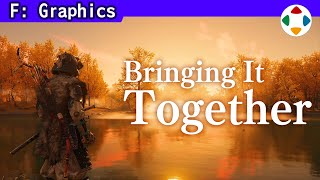
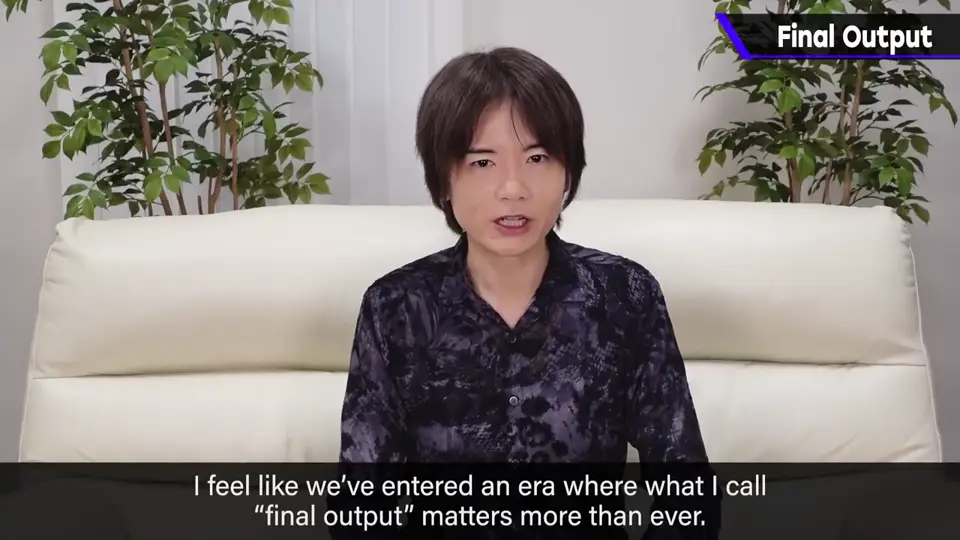
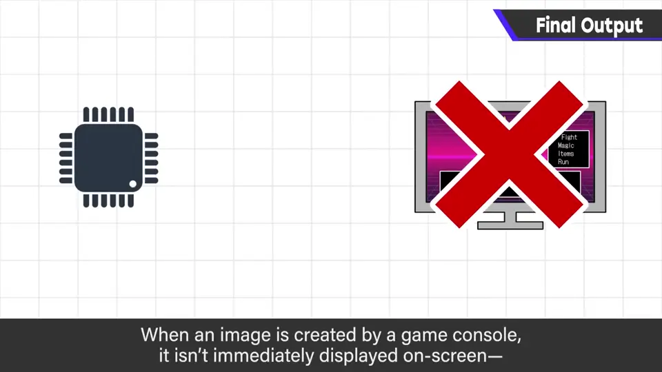
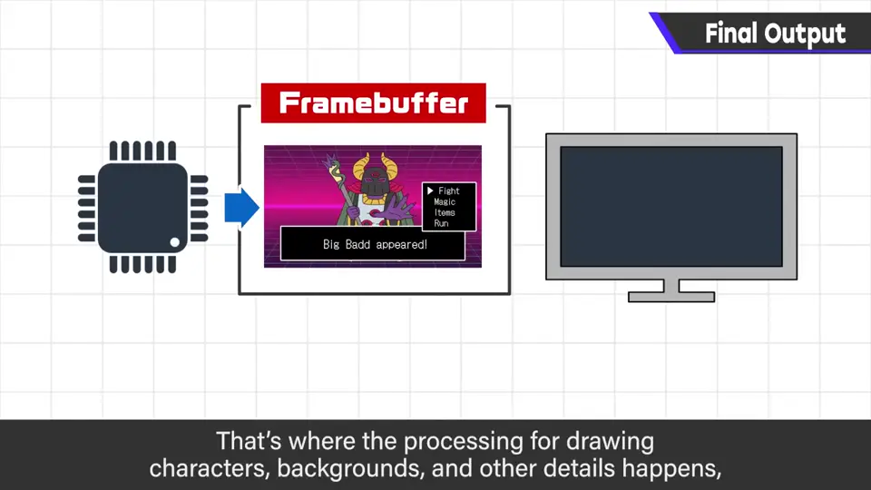
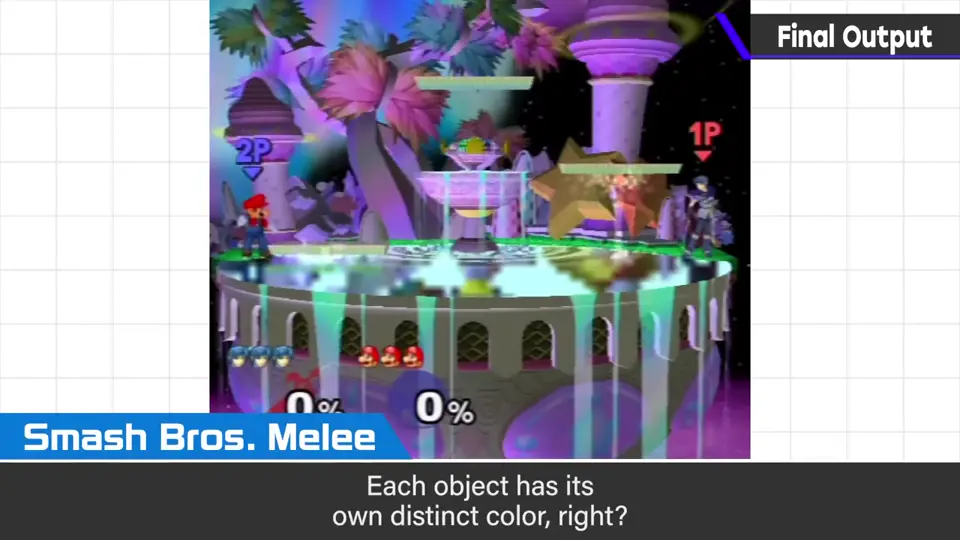
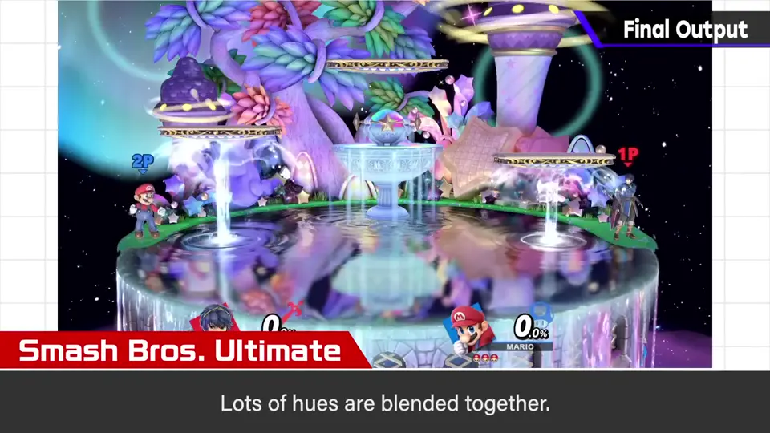
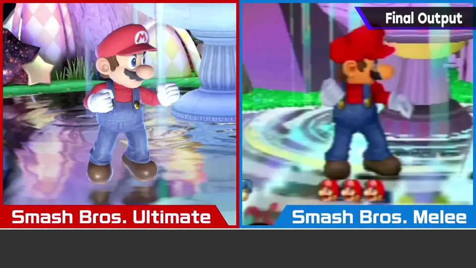
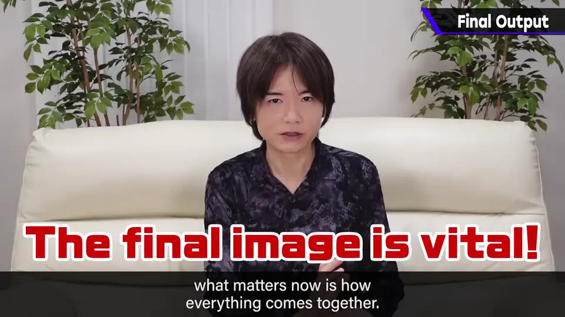
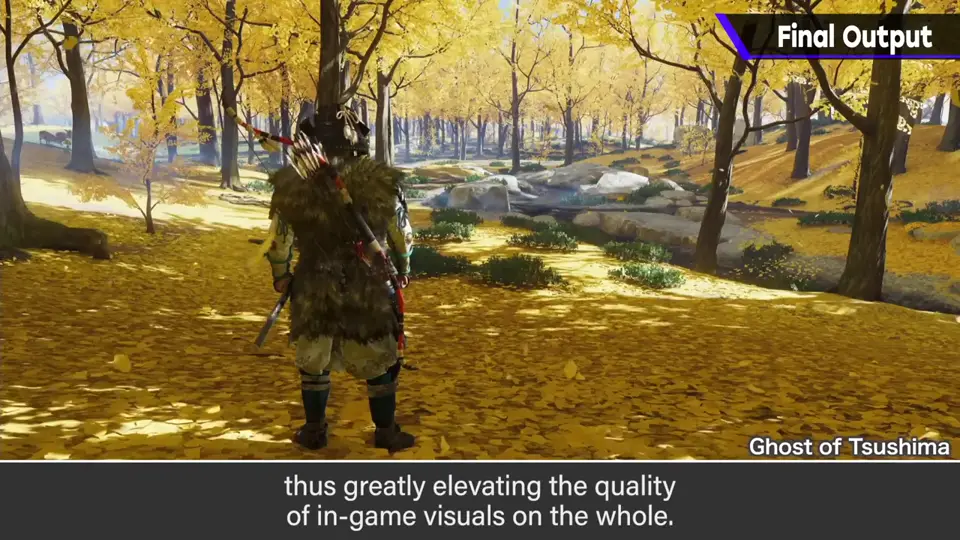

速览
樱井自己在性能相对低的机器上做游戏，完全有落后感；但在强大的高端 PC 和家用机上，他感到已进入最终输出决定一切的时代。有个概念叫帧缓冲区：游戏机生成的图不是立刻显示在画面上，而是先存进帧缓冲区，在其中画背景、画角色、画 UI 等，还会运用着色器、进行渲染；全部画完时才传到画面上。这时如何活用后处理做出好的图形显示很重要。例子或许不够：这是《大乱斗 DX》的画面，各物体颜色相当分明；这是《大乱斗 特别版》，各种色彩混合在一起，加入了地面等的反光色，最终输出变好了。随着机器性能提升、美术有意识地去做，最终输出会更好。专业术语和技巧一查一大堆，这里省略，从更宏观的视角讲：只要多边形角色漂亮就行的时代已经结束，最终输出才重要。人容易只盯细节，要拉远视角，由影像最终输出的协调人控制恰当的后处理，这会大幅提高游戏的影像品质。有这样的专家他甚至想雇。
1. 最终输出的时代 0:03
樱井自己在性能相对较低的机器上做游戏，完全有种落后感。但在强大的高端 PC 和家用游戏机上，他感到已进入最终输出决定一切的时代。

2. 帧缓冲区 0:22
有个概念叫帧缓冲区：游戏机生成的图不会立刻显示在画面上，而是先存进帧缓冲区。


在其中画背景、画角色、画 UI 等，还会运用着色器、进行渲染；全部画完的时候才传到画面上。
3. 《DX》与《特别版》 0:56
例子也许不够：这是《大乱斗 DX》的画面，各物体的颜色相当分明。

这是《大乱斗 特别版》的画面：各种色彩混合在一起，加入了地面等反光的颜色，最终输出变好了。


随着机器性能提升、美术有意识地去做，最终输出会变得更好。
4. 最终画面才是关键 1:40
专业术语和技巧一查一大堆，这里省略，从更粗略的视角来说：


人容易只盯着细节。要拉远视角，由影像最终输出的协调人控制恰当的后处理——这会大幅提高游戏的影像品质。有这样的专家，他甚至想雇用。
自测题
1. 什么是帧缓冲区？
游戏机生成的图先存放的地方；在其中绘制背景、角色、UI 并做着色与渲染，全部画完再传到画面。 0:30
2. 《DX》与《特别版》的画面有何差别？
DX 各物体颜色分明；特别版色彩混合、加入反光等，最终输出更好。 1:05
3. 樱井认为什么样的人能大幅提高影像品质？
拉远视角、控制恰当后处理的「最终输出协调人」。 2:05